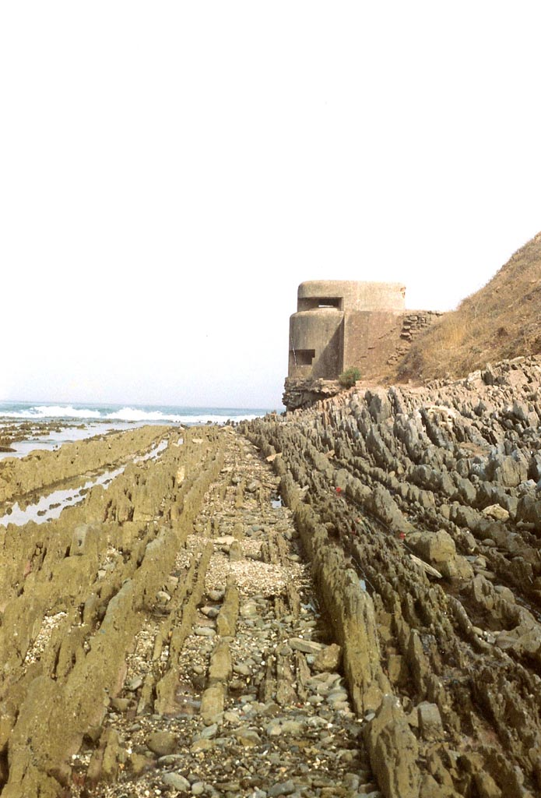
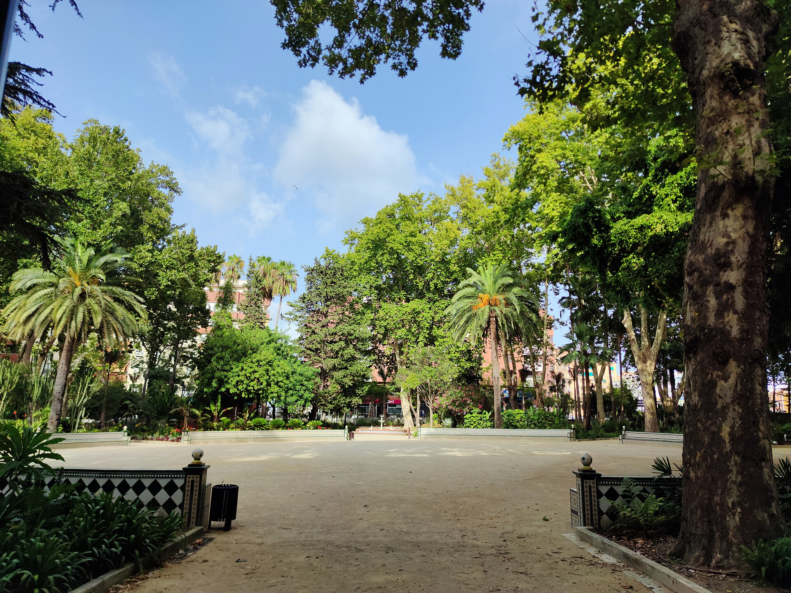

Galería de Algeciras
Galería adaptable a distintos anchos de pantalla con imágenes SVG originales creadas para esta práctica.





Ocho ejercicios de HTML nivel medio
Galería adaptable a distintos anchos de pantalla con imágenes SVG originales creadas para esta práctica.

